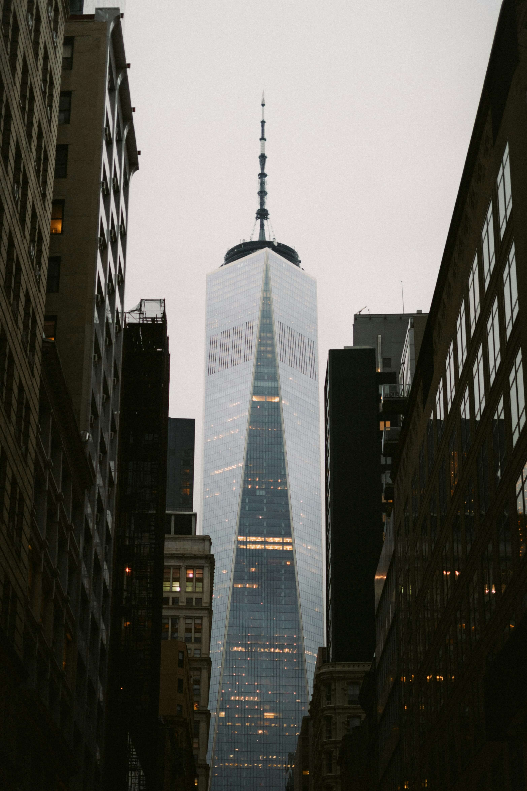

Фритрек и нулевой спринт: Подготовка к работе

</HTML>
Это было самое начало пути. На этом этапе важно было проникнуться основами и настроиться на учёбу. И, возможно, подумать, как новые знания могут повлиять на ваше будущее.
Я не боялся задавать вопросы, искать дополнительную информацию и экспериментировать. Чем больше я погружался в материал, тем больше у меня появлялось вопросов и тем интереснее становилось учиться. Я понимал, что каждый шаг вперёд приближает меня к моей цели.